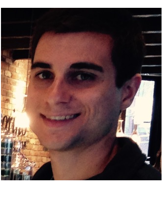
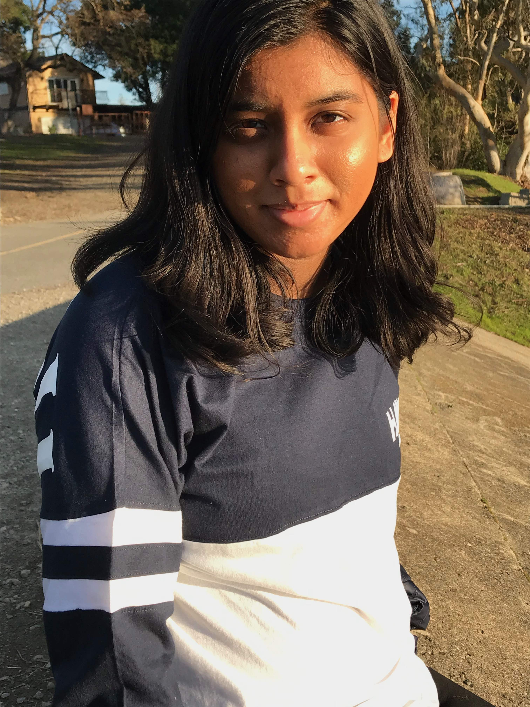
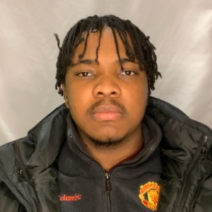
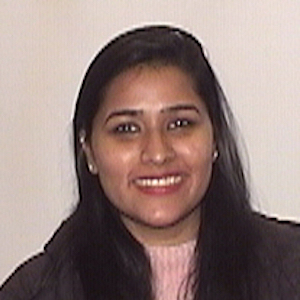
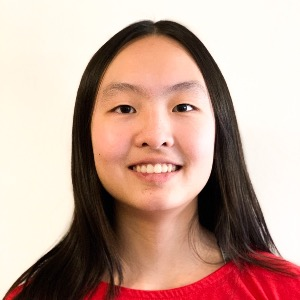
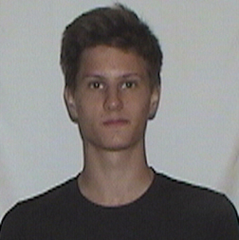
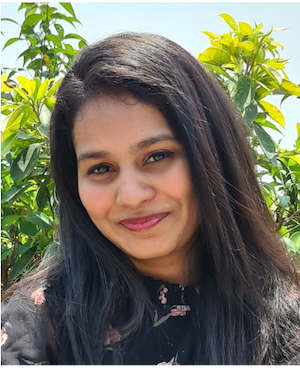
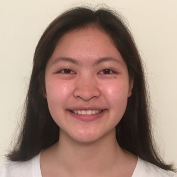

Staff
Instructors Matthias Felleisen, Ben Lerner
Teaching Assistants

technical TA
Eshwari Bhide

section TA
Michael Delmonaco
consulting, grading
Somtoo Chukwurah

consulting, grading
Alexis Hooks
consulting, grading
Rashi Jain

consulting, grading
Rajat Keshri
consulting, grading
Megan Li

section TA
Ryan Jung
section TA
James Packard

consulting, grading
Varsha Ramesh

consulting, grading
Connie Tang

consulting, grading

Grading Presentations
The staff evaluates presentations (presenters, panelists) in pairs and groups as follows:
instructor
time
section TA(s)
Matthias
09:15
Matthias
10:35
Ryan Jung, Megan Li
Ben
10:35
Ben
01:35
Eshwari Bhide
Your email will originate from one of the section TAs, and if you wish to discuss the feedback, reply to this email first. The TA may refer you the instructor(s).
Grading Code
The staff is organized into “grading pods” for evaluating code:
pod leader
pod members
Megan Li
Alexis Hooks, Varsha Ramesh, Connie Tang
Ryan Jung
Michael Delmonaco, James Packard, Rashi Jain
Somtoo Chukwurah
Eshwari Bhide, Rajat Keshri
The TAs will “sign” the evaluations. If you wish to discuss this feedback, meet with the grader first and then the leader of the pod. If all fails, communicate with the instructor(s).